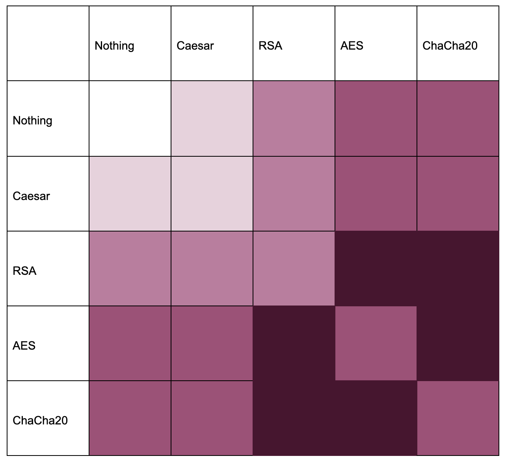
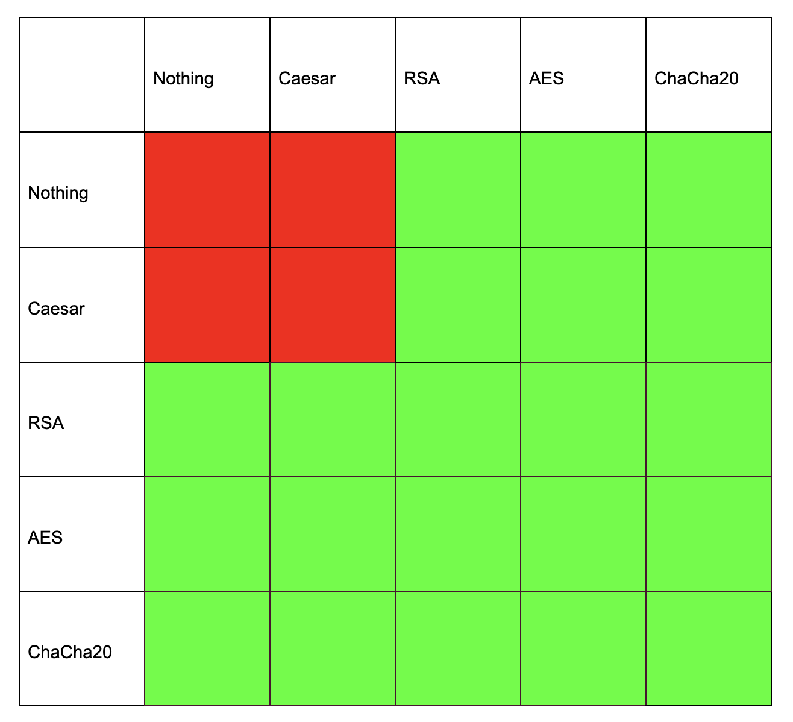

Esoterify: Cryptographic Composition Toolkit
Introduction
Esoterify is a command line tool that allows a user to input text, encrypt it, decrypt it, and store keys using four encryption techniques: Caesar, RSA, ChaCha20, and AES. You can find the code [here]
The main feature of Esoterify is that the program allows the user to chain multiple cryptographic methods and see transparently how each method builds upon each other.
The program is written in Python and uses a command line interface. The menu options are as follows:
e - enter a message
v - view current message
r - run a single encryption or decryption
c - run a chain of encryptions or decryptions
k - view keys
l - access the link to the writeup
m - view menu
q - quit programEntering a message, viewing the current message, viewing stored keys, viewing the menu, and quitting the program are all helpers that let the user understand what they’re doing, but the real purpose is to run encryptions or chain multiple methods.
Let’s go over each of the encryption methods.
Caesar
This is the most basic encryption method that uniformly shifts the value of each character in the string. Ex. A -> B, B -> C, C -> D, etc. The “key” in this case is a single number that represents the shift in the ASCII value of the character.
Examples:
If the key is +1, A becomes B.
If the key is +3, A becomes D.
If the key is -1, B becomes A.
Rather than a “decryption,” users are prompted to enter the negative value of their prior key to reverse the transformation that they just did. Caesar is not used for any security purposes because you can try each number and in a very short amount of time, you will find the data that someone tried to encrypt.
Two notes on Caesar: first, it is crackable by frequency analysis also, since as certain letters like E and A show up often, you can see which characters appear the most and map them to the most frequent letters of the English language (if we know the plaintext is in English). Second, this is the only cipher where I’ll place this emphasis on a correlation to ASCII. Caesar is for text/letters, so it makes sense to understand the data as ASCII values, but with other encryption methods, it’s better to understand them as a stream of bits.
RSA
RSA or Rivest-Shamir-Adleman is a form of Asymmetric encryption, where each party is given a private key and a public key. It enhances security and it allows for two parties to create an encrypted line of communication without having agreed on a prior key.
How do these keys get generated?
This is the math behind it:
Step 1: Mathematical Setup
Pick two prime numbers, p and q.
Let n = p x q.
n is your modulus, which is shared publicly
φ(n) is your Euler totient function, found by
φ(n) = (p−1)(q−1)
Step 2: Create the public key
We choose a public exponent, e, that must meet these conditions:
1 < e < φ(n)
e and φ(n) are coprime, so they share no common factors other than 1.
One common value of e is 65,537
The pair (n, e) is the public key.
Step 3: Create the private key
d is the modular multiplicative inverse of e (mod φ(n))
What that essentially means is that if you take d and multiply it by e and then modulus it by φ(n), you get 1, the identity, as the result.
In other words, d x e ≡ 1 (mod φ(n))
The pair (n, d) is the private key.
Step 4: Encrypt a message
Let’s say we have a message M. The encrypted ciphertext C = M^e (mod n)
Step 5: Decrypt a message
To decrypt that ciphertext C, we find that M = C^d (mod n)
As you can see, the message is encrypted using the public key (n, e) and decrypted using the private key (n, d)
Now, this is how it works, but I was curious as to why. To get a better understanding, I started with an easy example.
Let p = 3, and q = 11.
Then, n = 3 x 11 = 33 and φ(n) = (3-1) x (11-1) = 20
Now, we pick some e such that e is coprime to 20. Let’s say e = 3.
Our private exponent d is something such that d x 3 ≡ 1 (mod 20)
One candidate is seven, since 7 x 3 = 21, and 21 ≡ 1 (mod 20)
So now, we have a public key of (n = 33, e = 3) and a private key of (n = 33, d = 7)
Let’s try an example, say M = 5
Encryption:
C = 5^3 (mod 33) = 26
Decryption:
M = 26^7 (mod 33) = 5
So, it works. But why?
C ≡ M^e (mod n) and M ≡ C^d (mod n)
so
M ≡ ( M^e (mod n) ) ^ d (mod n)
and
M ≡ M^ed (mod n)
Now, since d x e ≡ 1 (mod φ(n))
For some integer k,
ed = k x φ(n) + 1
so
M^ed = M^(k x φ(n)+1) = ( M^φ(n) ) ^ k times M^1
Since M^φ(n) ≡ 1 (mod n) due to Euler's Totient Theorem,
( M^φ(n) ) ^ k times M^1 = 1^k x M ≡ M (mod n)Nice! It seems to work, but why is this secure?
It works because finding numbers p and q, with which to spawn keys is really easy, and multiplication is just a single operation. It’s easy, but trying to do the reverse and find p and q based on n is really hard. Since the attacker only knows n, but not p and q, they need to factor it, and trying to find the prime factors of a really large number takes a long time. For longer and more secure programs, it takes an astronomical amount of time.
AES
AES, also known as Advanced Encryption Standard, is a block cipher, and it processes data in blocks of 128 bits.
The keys are typically 128, 192, or 256 bits, and those lengths correspond to how many rounds the data goes through. 128 means 10 rounds, 192 means 12 rounds, and 256 means 14 rounds.
Each round contains four steps, and before I tell you the steps, try to conceptualize the data as a matrix with rows and columns, so each step makes more sense. It’s also helpful to understand the terms “block” and “state.” The blocks are units of data that sit static in the disc. You can think of these blocks as similar to the original message, M.
Step 1:
Each byte is replaced with another byte according to a lookup table (think, a map where the key is the original byte and the value is its replacement). This obscures the data.
Step 2:
The last three “rows” of the data are cycled around. This disorders the data.
Step 3:
The columns are mixed, and the four bytes in each column are combined. The algorithm takes each column of the state matrix and multiplies it with a fixed matrix. This makes it so every byte in the column affects the outcome of other bytes, which essentially “shakes the values around” a lot.
Step 4:
The original secret key contains several round keys, one per round of encryption. You XOR the round key with the data to get a value dependent on the key.
This is a symmetrical encryption method, unlike RSA. It’s a more computationally efficient method of encryption for large data sets, but computers need to establish a key without previous communication, for which asymmetric methods are key. Often, those methods are combined, and computers will use RSA to encrypt just a key, and then use that key for AES.
There are different types of AES, and the one I used to build Esoterify was AES-CFB, which acts differently and more like a stream cipher where it encrypts the IV and previous ciphertext and then XORs it with the plaintext. It moves continuously, and it uses the mechanisms of this block cipher to generate a keystream (a stream of randomized bits based on the key that XORs with the plaintext to generate ciphertext continuously – ChaCha20 does the same and that’s actually a stream cipher.)
One final note: I was confused that the amount of rounds was not proportional to the size of the key. (If a 128 bit key has 10 rounds, why doesn’t a 256 bit key have 20?) The reason is because increasing rounds has diminishing returns. Security doesn’t necessarily come from a large number of rounds, but mainly from the longer key, and AES-256 has a 256 bit key. There are 2^256 possibilities, which is such a large number, it is practically impossible to guess a key.
Both the rounds and the key are security features, and while the key length protects against brute force attacks, the rounds protect the data from cryptographic analysis. Note that the rounds are not all the same, since they each end by adding the round key, which changes each time.
The Initialization Vector is another key part of AES, and it is a randomly generated non-secret number. It is XORed with the first block of plaintext, so each different AES encryption is different.
ChaCha20
ChaCha20 is a stream cipher, so instead of breaking the text into blocks, it continuously encrypts the data. It uses a 256-bit key and a 96-bit nonce (which means number used once) to generate a very long stream of random numbers with which to XOR the data.
ChaCha20 is an ARX cipher, which means it uses Additional, Rotation, and XOR operations to scramble the data. These three operations are very efficient in hardware, making ChaCha20 fast. The 20 in the name comes from the 20 rounds of ARX operations done on the data to make it seem random.
Program
Now, let’s talk about the program and its features.
Here is an example run of the program that uses the aforementioned menu options:
enter your menu option: e
enter your message: hello
enter your menu option: v
current message: hello
enter your menu option: r
options:
a - caesar cipher (use the previous key times negative 1 to reverse)
options for encryption:
b - rsa
c - aes
d - chacha20
options for decryption:
e - rsa
f - aes
g - chacha20
enter the letter code of the encryption or decryption you would like to run: a
<caesar cipher engaged>
info: shifts character values by a key amount
i.e. positive one shifts A -> B, negative two shifts C -> A
enter key: 3
<message to encrypt>
hello
<step 1: break into characters>
['h', 'e', 'l', 'l', 'o']
<step 2: convert to ASCII values>
[104, 101, 108, 108, 111]
<step 3: shift by key>
[107, 104, 111, 111, 114]
<step 4: convert back to characters>
['k', 'h', 'o', 'o', 'r']
<step 5: rejoin>
khoor
<result: new current message>
enter your menu option: v
current message: khoor
enter your menu option: q
bye bye!Chaining
It does something similar with each single encryption, but the interesting feature is the ability to run multiple encryptions in a chaining pattern.
To be more clear, it will take a message that was encrypted using an earlier method and encrypt it using the new method, continuing until the chain ends. If we wanted to take a piece of plaintext and use Caesar, RSA, and then AES, the flow would look like this.
Original message A -> [Caesar Cipher] -> modified message B -> [RSA] -> modified message C -> [AES] -> modified message D.
Now, does this actually improve security? Which combinations are the most useful?
Let’s evaluate this in terms of security:
Caesar chained with anything: no increase in security. For example, Caesar + AES is the same level of security as AES since Caesar can be cracked instantly
RSA + AES: Very High. Both methods are good for security, and combining them can mean the best of both worlds. AES is more computationally efficient, and RSA is asymmetric, so as I mentioned earlier, they are often used together where RSA is used just to encrypt the key for AES. It’s industry standard, but not the way I implemented it in the form of chaining. You lose speed due to RSA and it is overkill to encrypt twice.
AES + ChaCha20: Extremely High. This method is overkill since both methods are efficient, secure, symmetric encryptions. One will work, so there is no real reason to use both.
ChaCha20 + RSA: Very High. This is similar to AES, but works well as a stream cipher. Again, it is the best of both worlds, but RSA works better to encrypt a small amount of information.
I made this subjective graphic where darker colors correspond to “more” security and lighter colors correspond to “less.” I made RSA slightly lighter than AES and ChaCha20. It isn’t inherently less secure, but it requires a much longer key to achieve the same level of security as AES. (Fun fact, An AES-128 key is about as strong as a 3072-bit RSA key). RSA is also theoretically crackable by quantum computers.

A more practical way to think about encryption is frankly more binary: is the data encrypted or not. What is the point of encrypting something 5 times using AES when only one time with AES makes it secure. Because of this, I revised the graphic to reflect a binary “is this or is this not secure” using red for insecure and green for secure.

In conclusion, using RSA, AES, or ChaCha20 should keep your data safe. Any combination of them will still encrypt your data, but it will likely be unnecessary. The most practical application of using multiple cryptographic methods is the RSA + AES or ChaCha20 combination that leverages RSA’s asymmetric advantage while still using an efficient data scrambler.
I encourage you to play around with the Esoterify program [here] and experiment with different combinations as an educational exercise. It helped me learn a ton about how each cryptography method worked step-by-step. I’ll leave you with an example of what Esoterify’s output looks like for chaining. Thank you for reading, and if you have any ideas to discuss with me about cryptography or security in general, please let me know! I’m always trying to learn more.
Chaining Example
enter your menu option: e
enter your message: hello guys!
enter your menu option: c
<chain mode engaged>
info: run multiple encryptions/decryptions in sequence
enter space-separated letter codes
example: b c f
a=caesar b=rsa c=aes d=chacha20 e=rsa decrypt f=aes decrypt g=chacha20 decrypt
enter chain: a b c
<chain summary>
1. a - Caesar
2. b - RSA
3. c - AES-256-CFB
<chain step 1/3: Caesar>
message before step:
hello guys!
<caesar cipher engaged>
info: shifts character values by a key amount
i.e. positive one shifts A -> B, negative two shifts C -> A
enter key: 1
<message to encrypt>
hello guys!
<step 1: break into characters>
['h', 'e', 'l', 'l', 'o', ' ', 'g', 'u', 'y', 's', '!']
<step 2: convert to ASCII values>
[104, 101, 108, 108, 111, 32, 103, 117, 121, 115, 33]
<step 3: shift by key>
[105, 102, 109, 109, 112, 33, 104, 118, 122, 116, 34]
<step 4: convert back to characters>
['i', 'f', 'm', 'm', 'p', '!', 'h', 'v', 'z', 't', '"']
<step 5: rejoin>
ifmmp!hvzt"
<result: new current message>
message after step:
ifmmp!hvzt"
<chain step 2/3: RSA>
message before step:
ifmmp!hvzt"
<rsa cipher engaged>
info: asymmetric cipher using public key (e, n) and private key (d, n)
<message to encrypt>
ifmmp!hvzt"
<step 1: generate prime numbers p and q>
p: 3413
q: 15887
<step 2: compute n and phi(n)>
n: 54222331
phi(n): 54203032
<step 3: choose public exponent e>
e: 65537
<step 4: compute private exponent d>
d: 26405545
<step 5: convert message to ASCII integers>
[105, 102, 109, 109, 112, 33, 104, 118, 122, 116, 34]
<step 6: encrypt each integer with c = m^e mod n>
[22584759, 5810400, 7271499, 7271499, 48073005, 40981122, 48223838, 767863, 7057970, 24026372, 34514369]
<step 7: convert ciphertext to bytes and encode base64>
ciphertext bytes (hex): 01589db70058a8e0006ef44b006ef44b02dd892d0271528202dfd65e000bb777006bb232016e9d04020ea5c1
base64: AVidtwBYqOAAbvRLAG70SwLdiS0CcVKCAt/WXgALt3cAa7IyAW6dBAIOpcE=
<result: encryption complete>
stored key #1: 26405545:54222331
message after step:
AVidtwBYqOAAbvRLAG70SwLdiS0CcVKCAt/WXgALt3cAa7IyAW6dBAIOpcE=
<chain step 3/3: AES-256-CFB>
message before step:
AVidtwBYqOAAbvRLAG70SwLdiS0CcVKCAt/WXgALt3cAa7IyAW6dBAIOpcE=
<aes-256 cipher engaged>
info: industry-standard block cipher, 128-bit blocks with 256-bit key
<message to encrypt>
AVidtwBYqOAAbvRLAG70SwLdiS0CcVKCAt/WXgALt3cAa7IyAW6dBAIOpcE=
<step 1: convert to bytes>
message as bytes: b'AVidtwBYqOAAbvRLAG70SwLdiS0CcVKCAt/WXgALt3cAa7IyAW6dBAIOpcE='
length: 60 bytes
<step 2: generate key and iv (initialization vector)>
key (256 bits): 2ea75331d4e1bc7eddcdcf0892b07fe7f176b70a6bbcaab417a56466daec1148
iv (128 bits): 7ada8ef7f238a1793bbff06a25eb32a2
<step 3: encrypt using aes-cfb>
encrypted bytes (hex): 6343a10b83d0648c43330db8612d4eaca1b958ae452a06dd7e1078f00af9f312f960fcacfb5acfce8f7284f69d98f785baff8e56f6cc5e4dab3d837b
length: 60 bytes
<step 4: prepend iv and encode base64>
iv + ciphertext (hex): 7ada8ef7f238a1793bbff06a25eb32a26343a10b83d0648c43330db8612d4eaca1b958ae452a06dd7e1078f00af9f312f960fcacfb5acfce8f7284f69d98f785baff8e56f6cc5e4dab3d837b
base64: etqO9/I4oXk7v/BqJesyomNDoQuD0GSMQzMNuGEtTqyhuViuRSoG3X4QePAK+fMS+WD8rPtaz86PcoT2nZj3hbr/jlb2zF5Nqz2Dew==
<result: encryption complete>
stored key #2: 2ea75331d4e1bc7eddcdcf0892b07fe7f176b70a6bbcaab417a56466daec1148
message after step:
etqO9/I4oXk7v/BqJesyomNDoQuD0GSMQzMNuGEtTqyhuViuRSoG3X4QePAK+fMS+WD8rPtaz86PcoT2nZj3hbr/jlb2zF5Nqz2Dew==
<result: chain complete>
enter your menu option: c
<chain mode engaged>
info: run multiple encryptions/decryptions in sequence
enter space-separated letter codes
example: b c f
a=caesar b=rsa c=aes d=chacha20 e=rsa decrypt f=aes decrypt g=chacha20 decrypt
enter chain: f e a
<chain summary>
1. f - AES-256-CFB decrypt
2. e - RSA decrypt
3. a - Caesar
<chain step 1/3: AES-256-CFB decrypt>
message before step:
etqO9/I4oXk7v/BqJesyomNDoQuD0GSMQzMNuGEtTqyhuViuRSoG3X4QePAK+fMS+WD8rPtaz86PcoT2nZj3hbr/jlb2zF5Nqz2Dew==
<aes-256 decryption engaged>
<step 1: get key>
stored keys:
1. RSA: 26405545:54222331
2. AES-256-CFB: 2ea75331d4e1bc7eddcdcf0892b07fe7f176b70a6bbcaab417a56466daec1148
enter key number or paste key: 2
using key: 2ea75331d4e1bc7eddcdcf0892b07fe7f176b70a6bbcaab417a56466daec1148
<step 2: decode base64>
base64 input: etqO9/I4oXk7v/BqJesyomNDoQuD0GSMQzMNuGEtTqyhuViuRSoG3X4QePAK+fMS+WD8rPtaz86PcoT2nZj3hbr/jlb2zF5Nqz2Dew==
decoded (hex): 7ada8ef7f238a1793bbff06a25eb32a26343a10b83d0648c43330db8612d4eaca1b958ae452a06dd7e1078f00af9f312f960fcacfb5acfce8f7284f69d98f785baff8e56f6cc5e4dab3d837b
<step 3: extract iv>
iv: 7ada8ef7f238a1793bbff06a25eb32a2
ciphertext: 6343a10b83d0648c43330db8612d4eaca1b958ae452a06dd7e1078f00af9f312f960fcacfb5acfce8f7284f69d98f785baff8e56f6cc5e4dab3d837b
<step 4: decrypt>
decrypted bytes: 4156696474774259714f41416276524c4147373053774c64695330436364b4341742f575867414c7433634161374979415736644241494f7063453d
<step 5: convert to string>
decrypted: AVidtwBYqOAAbvRLAG70SwLdiS0CcVKCAt/WXgALt3cAa7IyAW6dBAIOpcE=
<result: decryption complete>
message after step:
AVidtwBYqOAAbvRLAG70SwLdiS0CcVKCAt/WXgALt3cAa7IyAW6dBAIOpcE=
<chain step 2/3: RSA decrypt>
message before step:
AVidtwBYqOAAbvRLAG70SwLdiS0CcVKCAt/WXgALt3cAa7IyAW6dBAIOpcE=
<rsa decryption engaged>
<step 1: get private key (d:n)>
stored keys:
1. RSA: 26405545:54222331
2. AES-256-CFB: 2ea75331d4e1bc7eddcdcf0892b07fe7f176b70a6bbcaab417a56466daec1148
enter key number or paste private key: 1
using d: 26405545
using n: 54222331
<step 2: decode base64 to ciphertext bytes>
base64 input: AVidtwBYqOAAbvRLAG70SwLdiS0CcVKCAt/WXgALt3cAa7IyAW6dBAIOpcE=
ciphertext bytes (hex): 01589db70058a8e0006ef44b006ef44b02dd892d0271528202dfd65e000bb777006bb232016e9d04020ea5c1
<step 3: split bytes into rsa blocks>
[22584759, 5810400, 7271499, 7271499, 48073005, 40981122, 48223838, 767863, 7057970, 24026372, 34514369]
<step 4: decrypt each integer with m = c^d mod n>
[105, 102, 109, 109, 112, 33, 104, 118, 122, 116, 34]
<step 5: convert ASCII integers to characters>
ifmmp!hvzt"
<result: decryption complete>
message after step:
ifmmp!hvzt"
<chain step 3/3: Caesar>
message before step:
ifmmp!hvzt"
<caesar cipher engaged>
info: shifts character values by a key amount
i.e. positive one shifts A -> B, negative two shifts C -> A
enter key: -1
<message to encrypt>
ifmmp!hvzt"
<step 1: break into characters>
['i', 'f', 'm', 'm', 'p', '!', 'h', 'v', 'z', 't', '"']
<step 2: convert to ASCII values>
[105, 102, 109, 109, 112, 33, 104, 118, 122, 116, 34]
<step 3: shift by key>
[104, 101, 108, 108, 111, 32, 103, 117, 121, 115, 33]
<step 4: convert back to characters>
['h', 'e', 'l', 'l', 'o', ' ', 'g', 'u', 'y', 's', '!']
<step 5: rejoin>
hello guys!
<result: new current message>
message after step:
hello guys!That's it for today! Thanks for reading.